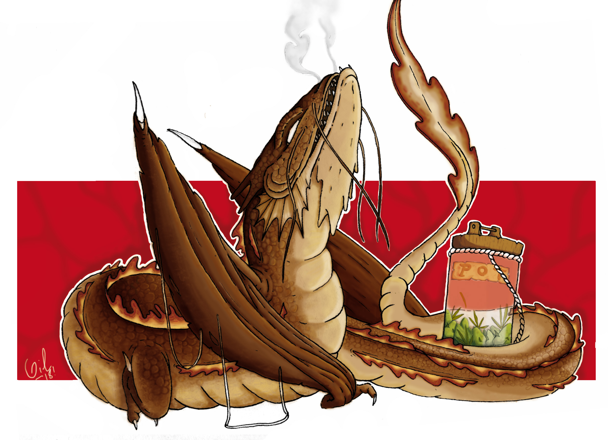
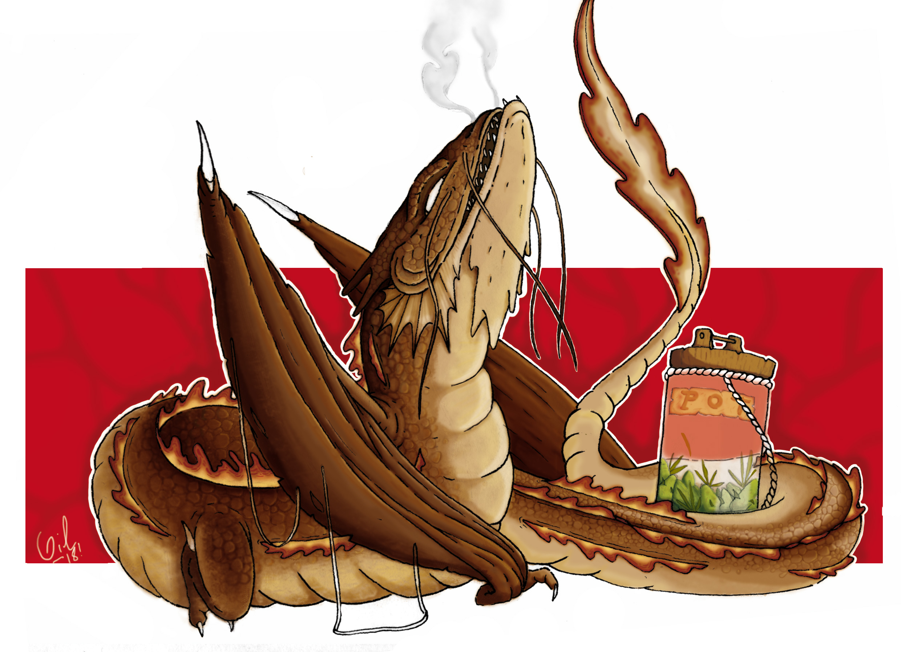
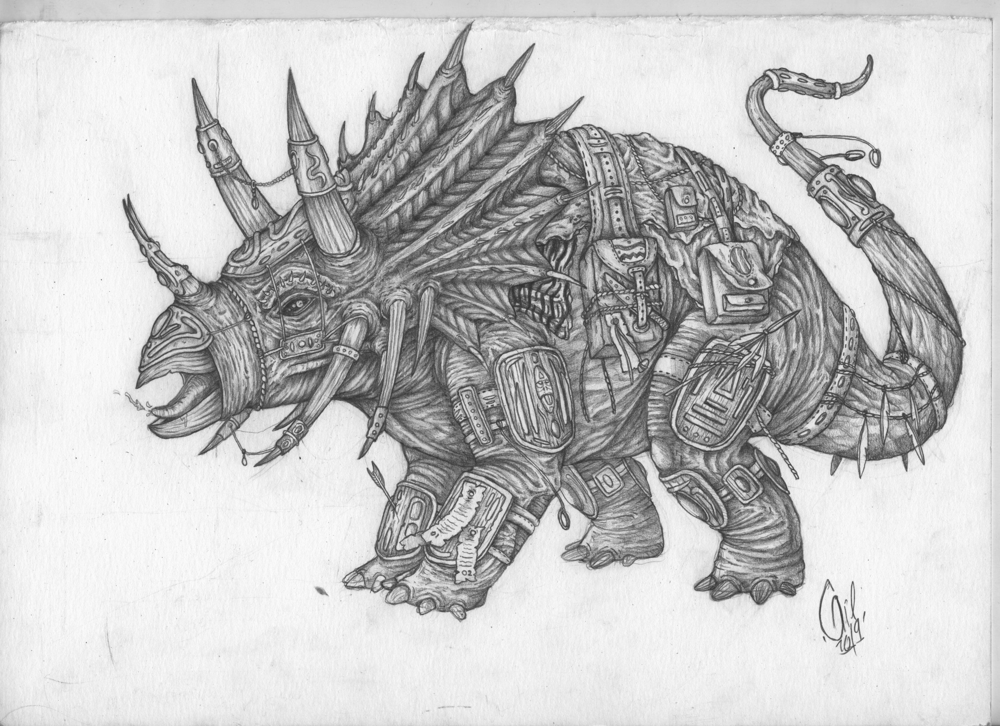
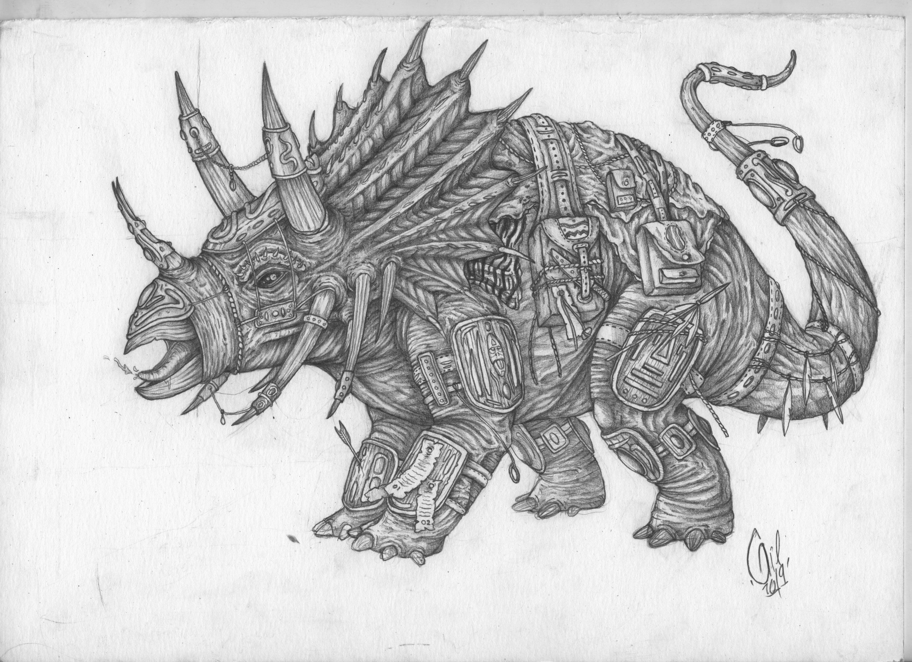
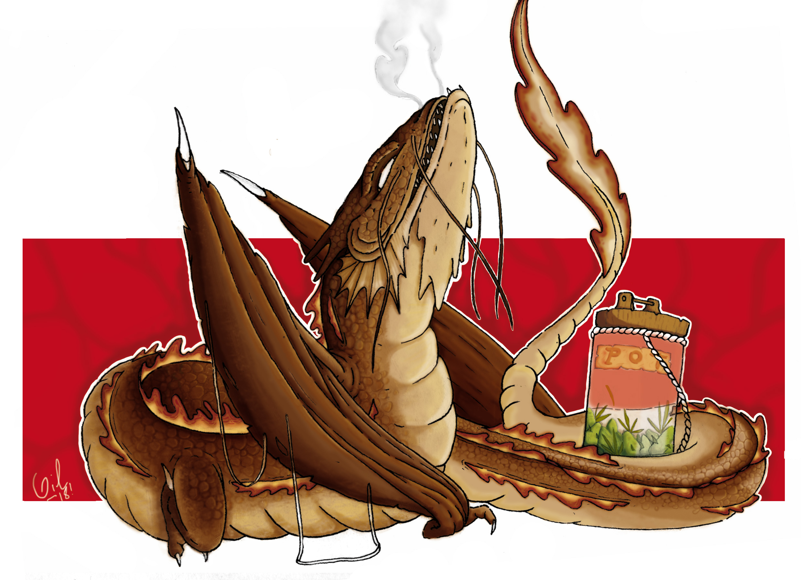
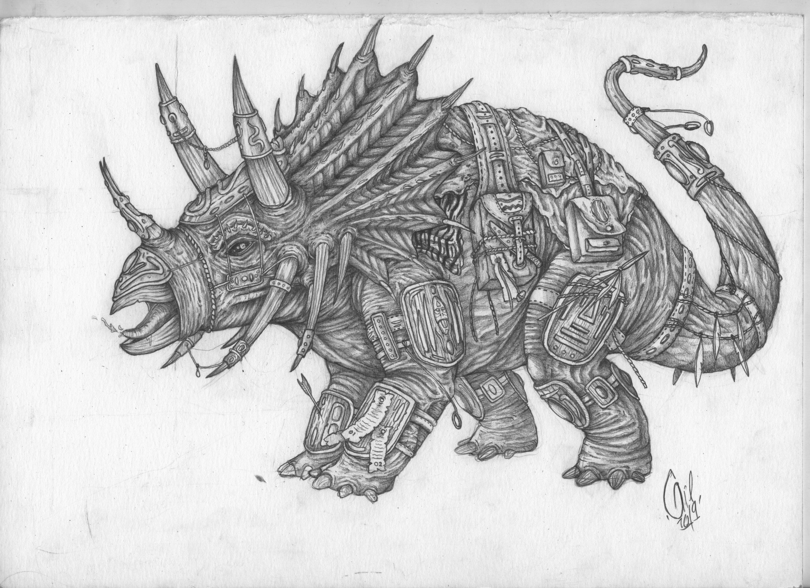

 


Alberto Gil, más conocido como Barba Bacterio, es un ilustrador de Madrid, nacido en 1996 | Al comienzo de su vida como estudiante el dibujo era solo un hobby, pero tras darse cuenta de que no habia otra cosa que le gustaba, apostó sus horas en desarrollar su faceta artística | La ilustración de Barba Bacterio se centra en la creación de lugares y animales fantásticos | El estilo es muy cercano al cómic, aunque muy influenciado por el cine oriental.

